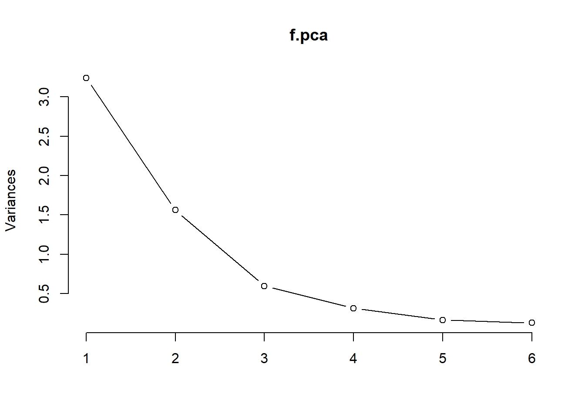
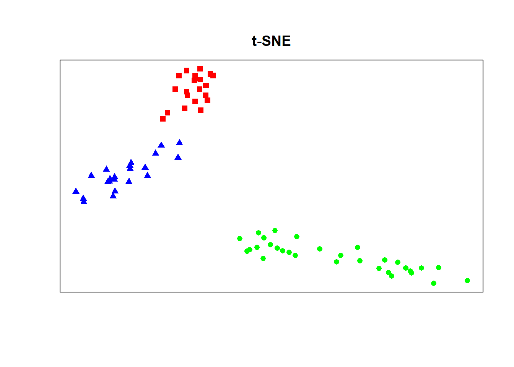

High Dim Vis _draft
Nicholas Spyrison
3 April 2018
NOTE: Graphics of tourr::animate make it to the figures folder, but not into the .html document!!
tourr; visualizing higher dimensions vs alternatives
Absract
Visualizing in higher (greater than p=3 numeric dimensions) can be messy and unintuitive. Here we explain the methodology and explore the functionality of tourr. We offer a vignette for use and contrast with other higher dimensional visualization methods.
The R package, tourr (2011, Wickham, H., D. Cook), gives us the means to animate the projection as we rotate though p-dimensions. This is achieved by varying the contributions from each dimension, via random walk, predefined path, or optimizing an index.
sources
Wickham, H., D. Cook, and H. Hofmann (2015). Visualising statistical models: Removing the blindfold (withdiscussion). Statistical Analysis and Data Mining 8(4), 203–225.
Wickham, H., D. Cook, H. Hofmann, and A. Buja (2011). tourr: An r package for exploring multivariate data withprojections. Journal of Statistical Software 40(2), http://www.jstatsoft.org/v40.
Asimov D (1985). “The Grand Tour: A Tool for Viewing Multidimensional Data.” SIAM Journal of Scientific and Statistical Computing, 6(1), 128–143.
High Dimensional Data
Let ‘high dimensional’ refer to any data set with more than 3 numeric variables. Dimensions in this definition are rarely space or time. Such multivariate data are still interpretable in mathematics and numbers, but their visualization is not trivial.
flea Data Set
6 measurements taken between 3 different species of flea-beetles. 74 observations arcoss 6 dimensions and species. Below species controls the color and point type, but is unknown to the methods. Available with the tourr package.
library(tourr)
f <- flea[, 1:6]
f.col <- rainbow(length(unique(flea$species)))[as.numeric(as.factor(flea$species))]
f.pch <- as.numeric(flea$species)+14
### Tourr
f.holes <- save_history(f, guided_tour(index = holes), max_bases = 25)## Value 0.584 71.5% better (0.781 away) - NEW BASIS
## Value 0.678 99.0% better (0.781 away) - NEW BASIS
## Value 0.740 9.2% better (0.411 away) - NEW BASIS
## Value 0.844 14.0% better (0.648 away) - NEW BASIS
## Value 0.864 2.3% better (0.254 away) - NEW BASIS
## Value 0.867 0.3% better (0.088 away) - NEW BASIS
## Value 0.868 0.1% better (0.050 away)
## Value 0.869 0.3% better (0.076 away) - NEW BASIS
## Value 0.870 0.1% better (0.049 away)
## Value 0.870 0.1% better (0.057 away) - NEW BASIS
## Value 0.872 0.1% better (0.055 away) - NEW BASIS
## Value 0.873 0.1% better (0.071 away) - NEW BASIS
## Value 0.875 0.2% better (0.088 away) - NEW BASIS
## Value 0.878 0.3% better (0.130 away) - NEW BASIS
## Value 0.881 0.4% better (0.110 away) - NEW BASIS
## Value 0.890 1.0% better (0.287 away) - NEW BASIS
## Value 0.893 0.4% better (0.092 away) - NEW BASIS
## Value 0.894 0.1% better (0.059 away)
## Value 0.895 0.2% better (0.063 away) - NEW BASIS
## Value 0.895 0.1% better (0.048 away)
## Value 0.898 0.4% better (0.193 away) - NEW BASIS
## Value 0.902 0.4% better (0.111 away) - NEW BASIS
## Value 0.903 0.1% better (0.080 away) - NEW BASIS
## Value 0.904 0.1% better (0.080 away) - NEW BASIS
## Value 0.907 0.3% better (0.112 away) - NEW BASIS
## Value 0.908 0.1% better (0.043 away)
## Value 0.908 0.1% better (0.067 away)
## Value 0.908 0.1% better (0.035 away)
## Value 0.908 0.1% better (0.041 away)
## Value 0.908 0.0% better (0.026 away)
## Value 0.908 0.0% better (0.013 away)
## Value 0.908 0.0% better (0.027 away)
## Value 0.908 0.1% better (0.042 away)
## Value 0.909 0.2% better (0.088 away) - NEW BASIS
## Value 0.910 0.2% better (0.085 away) - NEW BASIS
## Value 0.911 0.0% better (0.036 away)
## Value 0.911 0.0% better (0.033 away)
## Value 0.911 0.1% better (0.069 away)
## Value 0.911 0.1% better (0.047 away)
## Value 0.911 0.1% better (0.035 away)
## Value 0.911 0.0% better (0.034 away)
## Value 0.911 0.0% better (0.036 away)
## Value 0.911 0.1% better (0.043 away)
## Value 0.911 0.1% better (0.048 away)
## Value 0.912 0.2% better (0.127 away) - NEW BASIS
## Value 0.912 0.1% better (0.038 away)
## Value 0.913 0.2% better (0.068 away) - NEW BASIS
## Value 0.914 0.0% better (0.027 away)
## Value 0.914 0.0% better (0.032 away)
## Value 0.914 0.0% better (0.034 away)
## Value 0.913 0.0% better (0.016 away)
## Value 0.913 0.0% better (0.022 away)
## Value 0.914 0.1% better (0.057 away)
## Value 0.913 0.0% better (0.011 away)
## Value 0.914 0.1% better (0.067 away)
## Value 0.914 0.0% better (0.031 away)
## Value 0.914 0.0% better (0.019 away)
## Value 0.914 0.1% better (0.057 away)
## Value 0.913 0.0% better (0.017 away)
## Value 0.914 0.0% better (0.028 away)
## Value 0.914 0.0% better (0.022 away)
## Value 0.913 0.0% better (0.013 away)
## Value 0.914 0.0% better (0.037 away)
## Value 0.914 0.1% better (0.057 away)
## Value 0.913 0.0% better (0.013 away)
## Value 0.913 0.0% better (0.010 away)
## Value 0.914 0.0% better (0.019 away)
## Value 0.913 0.0% better (0.015 away)
## Value 0.914 0.0% better (0.035 away)
## Value 0.914 0.1% better (0.076 away)
## Value 0.913 0.0% better (0.018 away)
## No better bases found after 25 tries. Giving up.
## Final projection:
## 0.625 -0.136
## 0.046 0.464
## 0.213 0.346
## -0.046 0.564
## 0.737 -0.079
## 0.131 0.568f.holes_end <- matrix(as.numeric(f.holes[,,dim(f.holes)[3]]),ncol=2)
### PCA
f.pca <- prcomp(f, center = TRUE, scale. = TRUE)
f.v = round(sum(f.pca[[1]][1:2]) / sum(f.pca[[1]]),3)
f.main = paste(100*f.v,"% of var~ PC1,2")
plot(f.pca, type = "l")
sum(f.pca[[1]][5:6]) / sum(f.pca[[1]]) #last 2 removes 14.83% of the variation.## [1] 0.148394sum(f.pca[[1]][1:2]) / sum(f.pca[[1]]) #first 2 contains: 59.25% of the variation.## [1] 0.5925214Comparing PCA with holes tour
par(mfrow=c(1,2))
plot(f.pca$x, col=f.col, pch=f.pch, xaxt='n',
yaxt='n', ann=F, space=0)
title(main=f.main, line=1)
segments(0, 0, f.pca$rotation[,1], f.pca$rotation[,2], col="grey50")
text(f.pca$rotation[,1], f.pca$rotation[,2], label = names(f), col = "grey50")
animate(f, start=f.holes_end, max_frames=0,
display = display_xy(pch=f.pch, col=f.col))
title(main="holes tour", line=1)
par(mfrow=c(1,1))For the most part, PCA 1 and 2 is close to the holes guided tour. We can see from the data and the original axis that the main difference is location of the green and blue species. if we rotate across the x=y diagonal the results are similar.
t-SNE
library(Rtsne)
#perplexity is knn
f.tsne <- Rtsne(f, dims = 6, perplexity=15, verbose=TRUE, max_iter = 500)## Read the 74 x 6 data matrix successfully!
## Using no_dims = 6, perplexity = 15.000000, and theta = 0.500000
## Computing input similarities...
## Normalizing input...
## Building tree...
## - point 0 of 74
## Done in 0.00 seconds (sparsity = 0.716947)!
## Learning embedding...
## Iteration 50: error is 45.728112 (50 iterations in 0.12 seconds)
## Iteration 100: error is 46.119652 (50 iterations in 0.11 seconds)
## Iteration 150: error is 48.096541 (50 iterations in 0.11 seconds)
## Iteration 200: error is 43.781380 (50 iterations in 0.11 seconds)
## Iteration 250: error is 46.986820 (50 iterations in 0.11 seconds)
## Iteration 300: error is 0.582931 (50 iterations in 0.10 seconds)
## Iteration 350: error is 0.129264 (50 iterations in 0.11 seconds)
## Iteration 400: error is 0.111467 (50 iterations in 0.11 seconds)
## Iteration 450: error is 0.107404 (50 iterations in 0.08 seconds)
## Iteration 500: error is 0.106322 (50 iterations in 0.08 seconds)
## Fitting performed in 1.03 seconds.colnames(f.tsne$Y) <- paste0("tS",1:6)
plot(f.tsne$Y, col=f.col, pch=f.pch,
main="t-SNE", line=1, xaxt='n', yaxt='n', xlab='', ylab='')
Can look outstanding and spread groups the furthest! At what cost?
- Loss of repreducability even after
set.seed(n), t-SNE can look completle different every time. - Loss of interprebility to the real dimension space! The non-linear manipulation has left us with no map to real space!
Non-starter for analysis
It looks nice, and can use it for GUIs and illustration, more of a graphical display of categorical classification.
set.seed(5)
par(mfrow=c(3,3))
for (i in 1:9) {
f.tsne <- Rtsne(f, dims = 6, perplexity=15, verbose=TRUE, max_iter = 500)
colnames(f.tsne$Y) <- paste0("tS",1:6)
plot(f.tsne$Y, col=f.col, pch=f.pch, xaxt='n', yaxt='n', ann=FALSE)
title(main=paste("t-SNE ",i))
}## Read the 74 x 6 data matrix successfully!
## Using no_dims = 6, perplexity = 15.000000, and theta = 0.500000
## Computing input similarities...
## Normalizing input...
## Building tree...
## - point 0 of 74
## Done in 0.00 seconds (sparsity = 0.716947)!
## Learning embedding...
## Iteration 50: error is 46.351535 (50 iterations in 0.10 seconds)
## Iteration 100: error is 46.521652 (50 iterations in 0.08 seconds)
## Iteration 150: error is 47.645556 (50 iterations in 0.08 seconds)
## Iteration 200: error is 47.300615 (50 iterations in 0.08 seconds)
## Iteration 250: error is 45.538745 (50 iterations in 0.09 seconds)
## Iteration 300: error is 0.397372 (50 iterations in 0.08 seconds)
## Iteration 350: error is 0.117472 (50 iterations in 0.10 seconds)
## Iteration 400: error is 0.109061 (50 iterations in 0.09 seconds)
## Iteration 450: error is 0.108030 (50 iterations in 0.09 seconds)
## Iteration 500: error is 0.106116 (50 iterations in 0.08 seconds)
## Fitting performed in 0.87 seconds.## Read the 74 x 6 data matrix successfully!
## Using no_dims = 6, perplexity = 15.000000, and theta = 0.500000
## Computing input similarities...
## Normalizing input...
## Building tree...
## - point 0 of 74
## Done in 0.00 seconds (sparsity = 0.716947)!
## Learning embedding...
## Iteration 50: error is 47.975400 (50 iterations in 0.09 seconds)
## Iteration 100: error is 45.392066 (50 iterations in 0.07 seconds)
## Iteration 150: error is 47.031297 (50 iterations in 0.08 seconds)
## Iteration 200: error is 47.311934 (50 iterations in 0.08 seconds)
## Iteration 250: error is 45.067836 (50 iterations in 0.07 seconds)
## Iteration 300: error is 0.856679 (50 iterations in 0.07 seconds)
## Iteration 350: error is 0.156494 (50 iterations in 0.07 seconds)
## Iteration 400: error is 0.107284 (50 iterations in 0.07 seconds)
## Iteration 450: error is 0.103297 (50 iterations in 0.07 seconds)
## Iteration 500: error is 0.102911 (50 iterations in 0.07 seconds)
## Fitting performed in 0.74 seconds.## Read the 74 x 6 data matrix successfully!
## Using no_dims = 6, perplexity = 15.000000, and theta = 0.500000
## Computing input similarities...
## Normalizing input...
## Building tree...
## - point 0 of 74
## Done in 0.00 seconds (sparsity = 0.716947)!
## Learning embedding...
## Iteration 50: error is 44.874718 (50 iterations in 0.10 seconds)
## Iteration 100: error is 45.245205 (50 iterations in 0.08 seconds)
## Iteration 150: error is 47.852776 (50 iterations in 0.08 seconds)
## Iteration 200: error is 46.162415 (50 iterations in 0.08 seconds)
## Iteration 250: error is 44.455184 (50 iterations in 0.08 seconds)
## Iteration 300: error is 0.883141 (50 iterations in 0.07 seconds)
## Iteration 350: error is 0.154951 (50 iterations in 0.07 seconds)
## Iteration 400: error is 0.119682 (50 iterations in 0.08 seconds)
## Iteration 450: error is 0.112505 (50 iterations in 0.08 seconds)
## Iteration 500: error is 0.107106 (50 iterations in 0.07 seconds)
## Fitting performed in 0.80 seconds.## Read the 74 x 6 data matrix successfully!
## Using no_dims = 6, perplexity = 15.000000, and theta = 0.500000
## Computing input similarities...
## Normalizing input...
## Building tree...
## - point 0 of 74
## Done in 0.00 seconds (sparsity = 0.716947)!
## Learning embedding...
## Iteration 50: error is 46.785319 (50 iterations in 0.09 seconds)
## Iteration 100: error is 45.010484 (50 iterations in 0.08 seconds)
## Iteration 150: error is 45.189380 (50 iterations in 0.08 seconds)
## Iteration 200: error is 45.593067 (50 iterations in 0.09 seconds)
## Iteration 250: error is 46.544669 (50 iterations in 0.08 seconds)
## Iteration 300: error is 1.053003 (50 iterations in 0.07 seconds)
## Iteration 350: error is 0.163432 (50 iterations in 0.06 seconds)
## Iteration 400: error is 0.115747 (50 iterations in 0.07 seconds)
## Iteration 450: error is 0.108472 (50 iterations in 0.08 seconds)
## Iteration 500: error is 0.105080 (50 iterations in 0.08 seconds)
## Fitting performed in 0.78 seconds.## Read the 74 x 6 data matrix successfully!
## Using no_dims = 6, perplexity = 15.000000, and theta = 0.500000
## Computing input similarities...
## Normalizing input...
## Building tree...
## - point 0 of 74
## Done in 0.00 seconds (sparsity = 0.716947)!
## Learning embedding...
## Iteration 50: error is 47.004536 (50 iterations in 0.09 seconds)
## Iteration 100: error is 46.255053 (50 iterations in 0.08 seconds)
## Iteration 150: error is 46.056769 (50 iterations in 0.07 seconds)
## Iteration 200: error is 47.237876 (50 iterations in 0.08 seconds)
## Iteration 250: error is 46.587640 (50 iterations in 0.08 seconds)
## Iteration 300: error is 0.940378 (50 iterations in 0.09 seconds)
## Iteration 350: error is 0.142342 (50 iterations in 0.06 seconds)
## Iteration 400: error is 0.110783 (50 iterations in 0.07 seconds)
## Iteration 450: error is 0.108028 (50 iterations in 0.08 seconds)
## Iteration 500: error is 0.104707 (50 iterations in 0.07 seconds)
## Fitting performed in 0.76 seconds.## Read the 74 x 6 data matrix successfully!
## Using no_dims = 6, perplexity = 15.000000, and theta = 0.500000
## Computing input similarities...
## Normalizing input...
## Building tree...
## - point 0 of 74
## Done in 0.00 seconds (sparsity = 0.716947)!
## Learning embedding...
## Iteration 50: error is 45.633092 (50 iterations in 0.09 seconds)
## Iteration 100: error is 45.125497 (50 iterations in 0.09 seconds)
## Iteration 150: error is 47.222756 (50 iterations in 0.09 seconds)
## Iteration 200: error is 46.321008 (50 iterations in 0.09 seconds)
## Iteration 250: error is 46.492404 (50 iterations in 0.09 seconds)
## Iteration 300: error is 1.110701 (50 iterations in 0.08 seconds)
## Iteration 350: error is 0.182332 (50 iterations in 0.07 seconds)
## Iteration 400: error is 0.121562 (50 iterations in 0.08 seconds)
## Iteration 450: error is 0.109985 (50 iterations in 0.08 seconds)
## Iteration 500: error is 0.110138 (50 iterations in 0.08 seconds)
## Fitting performed in 0.84 seconds.## Read the 74 x 6 data matrix successfully!
## Using no_dims = 6, perplexity = 15.000000, and theta = 0.500000
## Computing input similarities...
## Normalizing input...
## Building tree...
## - point 0 of 74
## Done in 0.00 seconds (sparsity = 0.716947)!
## Learning embedding...
## Iteration 50: error is 44.608054 (50 iterations in 0.09 seconds)
## Iteration 100: error is 44.806725 (50 iterations in 0.08 seconds)
## Iteration 150: error is 46.205342 (50 iterations in 0.08 seconds)
## Iteration 200: error is 50.432502 (50 iterations in 0.08 seconds)
## Iteration 250: error is 47.521741 (50 iterations in 0.08 seconds)
## Iteration 300: error is 0.691850 (50 iterations in 0.08 seconds)
## Iteration 350: error is 0.142209 (50 iterations in 0.07 seconds)
## Iteration 400: error is 0.111600 (50 iterations in 0.07 seconds)
## Iteration 450: error is 0.107512 (50 iterations in 0.07 seconds)
## Iteration 500: error is 0.105165 (50 iterations in 0.07 seconds)
## Fitting performed in 0.77 seconds.## Read the 74 x 6 data matrix successfully!
## Using no_dims = 6, perplexity = 15.000000, and theta = 0.500000
## Computing input similarities...
## Normalizing input...
## Building tree...
## - point 0 of 74
## Done in 0.00 seconds (sparsity = 0.716947)!
## Learning embedding...
## Iteration 50: error is 45.359603 (50 iterations in 0.09 seconds)
## Iteration 100: error is 45.641561 (50 iterations in 0.08 seconds)
## Iteration 150: error is 43.450039 (50 iterations in 0.08 seconds)
## Iteration 200: error is 46.482641 (50 iterations in 0.07 seconds)
## Iteration 250: error is 44.308546 (50 iterations in 0.08 seconds)
## Iteration 300: error is 0.405673 (50 iterations in 0.08 seconds)
## Iteration 350: error is 0.178574 (50 iterations in 0.07 seconds)
## Iteration 400: error is 0.114622 (50 iterations in 0.07 seconds)
## Iteration 450: error is 0.110850 (50 iterations in 0.09 seconds)
## Iteration 500: error is 0.107463 (50 iterations in 0.08 seconds)
## Fitting performed in 0.78 seconds.## Read the 74 x 6 data matrix successfully!
## Using no_dims = 6, perplexity = 15.000000, and theta = 0.500000
## Computing input similarities...
## Normalizing input...
## Building tree...
## - point 0 of 74
## Done in 0.00 seconds (sparsity = 0.716947)!
## Learning embedding...
## Iteration 50: error is 46.465460 (50 iterations in 0.09 seconds)
## Iteration 100: error is 46.497830 (50 iterations in 0.08 seconds)
## Iteration 150: error is 45.270884 (50 iterations in 0.08 seconds)
## Iteration 200: error is 46.265441 (50 iterations in 0.08 seconds)
## Iteration 250: error is 46.678897 (50 iterations in 0.07 seconds)
## Iteration 300: error is 1.063153 (50 iterations in 0.06 seconds)
## Iteration 350: error is 0.181977 (50 iterations in 0.07 seconds)
## Iteration 400: error is 0.117611 (50 iterations in 0.08 seconds)
## Iteration 450: error is 0.105988 (50 iterations in 0.08 seconds)
## Iteration 500: error is 0.104589 (50 iterations in 0.08 seconds)
## Fitting performed in 0.76 seconds.
set.seed(Sys.time()) #random seed
par(mfrow=c(1,1))neither t-SNE nor, tour is reproducible
Across method
par(mfrow=c(1,3))
animate(f.pca$x, max_frames=0,
display = display_xy(pch=f.pch, col=f.col))
title(main="PCA1,2", line=1)
animate(f.tsne$Y, max_frames=0,
display = display_xy(pch=f.pch, col=f.col))
title(main="t-SNE1,2", line=1)
animate(f, start=f.holes_end, max_frames=0,
display = display_xy(pch=f.pch, col=f.col))
title(main="holes tour", line=1)
par(mfrow=c(1,1))Side-by-side representation across methodology. Results from a single frame from tourr::animate() for comparison. Also note PCA and t-SNE have 6 dim of data. PCA has implicit order; descending variation. Viewing pairs() or tourr::animate() quickly shows us that t-SNE1,2 is not the optimal 2D projection. We could put t_SNE through PCA or the holes tour to reorient.